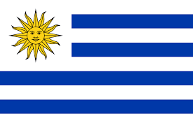

<!--
  Generated template for the AmericaPage page.

  See http://ionicframework.com/docs/components/#navigation for more info on
  Ionic pages and navigation.
-->
<ion-header>

  <ion-navbar>
    <ion-title>America</ion-title>
  </ion-navbar>

</ion-header>


<ion-content padding>
  <ion-list>
    <ion-item (click)="mostrarBrasil()">
      
      <span>Brasil</span>
    </ion-item>
    <ion-item (click)="mostrarUSA()">
      
      <span>Estados Unidos</span>
    </ion-item>
    <ion-item (click)="mostrarChile()">
      
      <span>Chile</span>
    </ion-item>
    <ion-item (click)="mostrarArgentina()">
      
      <span>Argentina</span>
    </ion-item>
    <ion-item (click)="mostrarUruguai()">
      
      <span>Uruguai</span>
    </ion-item>
  </ion-list>

</ion-content>